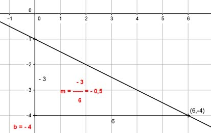

Lineare Funktionen Aufgabe 29 Ermitteln Sie die Gleichung der Geraden, wenn gegeben ist: P(6|-4); m = -0,5 Gesucht ist eine Funktionsgleichung der Form y = mx + b mit der Steigung m und dem Abschnitt b auf der y-Achse. Punktkoordinaten und m eingesetzt: -4 = 6 * (-0,5) + b |+3 b = -1 y = - 0,5x - 1 